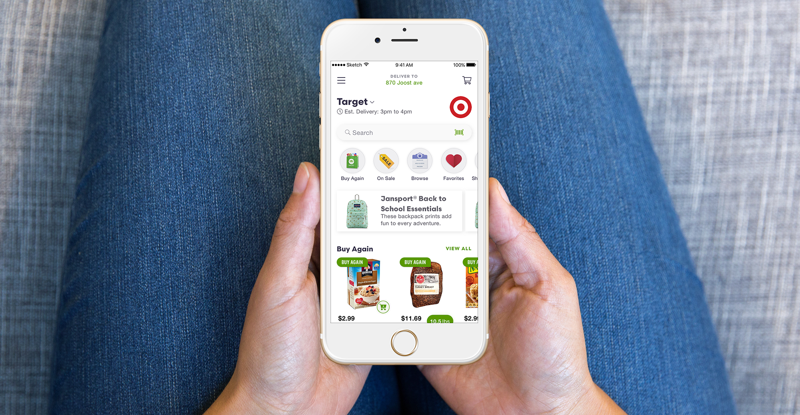
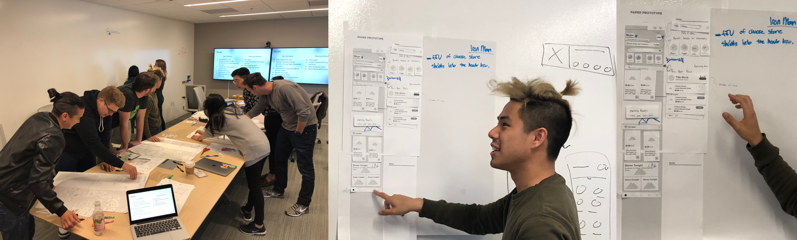
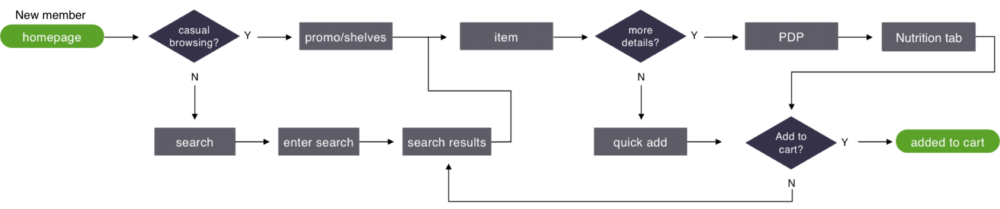
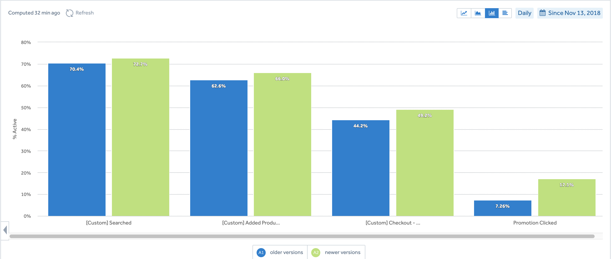

I worked as a product designer that led the marketplace experience of the business. My time was spent leading projects and creating a Design Language System (DLS) to overhaul the user interface of the mobile and web platforms. I worked closely with a product manager, researcher, and engineering. Other teams I worked with include: brand marketing, quality assurance, data science, and catalog.
Shipt is a grocery marketplace with same-day delivery. In 2018, the startup was acquired by Target with the goal of expanding nationwide by the holiday season. The product design team was new and we had to think about user experience enhancements as we entered hyper competitive markets. This led to more collaboration between design and engineering in contrast to engineering-first process that preceded my time. The features that I worked on were focused on the engagement and optimizing for a browsing experience to meet Gross Merchandise Volume (GMV) goals.
Ultimately, drive browsing behavior and help users make better decisions about their purchases.
According to a marketing analysis report, Shipt’s demographic were families with at least 1 child and a household income of over $75k. They work occupations like nurses, technical professionals, and managers. A majority of the demographic were women; moms who are the decision makers of their household. Essentially we were keeping in mind the working mom when we were designing. Understanding the user helped influence the decision-making process on the flows, features, and product decisions.
User interviews, competitor benchmark, paper prototyping sessions with stakeholders (catalog, engineering, product, marketing), leveraging data, and running usability tests.
We conducted a competitor benchmark on flow and a screen by screen page. What we learned:
I researched design patterns, design trends, and conducted a physical benchmark of grocery stores to see how we could leverage that brick and mortar experience digitally. From my moodboard, I saw similarities in the digital and physical grocery space of making the products stand out. Big images, good lighitng, depth, large typography, playful illustrations were some of the aspects I kept in mind when designing the components.
I facilitated a paper prototyping session to understand how different teams conceptualized how the homepage should work. During the session, stakeholders from catalog, marketing, product, and engineering partnered with a designer to brainstorm a way we could create solutions for the goal of the project. The purpose of the workshop was to get perspectives from other teams prior to designing so everyone had a chance to give input. Not only did the exercise help generate concepts, but there was alignment of what we should be focusing on: inspiring through curated promotions and optimizing popular product categories up front. After the session I went back to a whiteboard, consolidated the ideas, and hopped into Sketch to wireframe.
The Product Detail Page (PDP) was also an effort that was coupled with the homepage since products were exposed upfront. In it’s current state, it did not provide any information that could help a users make an informed decision about a product. Unlike the homepage, the PDP was a pain point that our users have requested we address. Users with allergies or dietary restrictions had no way of knowing the ingredients and made a decision solely based on a catalog image.

We interviewed 12 users, 6 non Shipt users (but have used grocery delivery apps), and 6 were Shipt users who have requested nutritional information before. We also ran usability testing on usertesting.com with 20 people.
What we found:
After validating and then reviewing with stakeholders, we felt confident about shipping our designs for development. One constraint that came up was the limitation of the framework not being able to surface a toast notification. We went back to the whiteboard and decided to surface a cart on the top right to indicate a confirmation as a temporary solution. Using haptic feedback wasn’t enough for users to realize that an item was added to their cart.
It was interesting to see how users made a decision about when to use a quick add directly from the homepage versus tapping into a product details page. It was a consistent pattern that testers would mention; if there was a common generic product, they can decide solely on price or brand and add from there. However, if a member was unsure about the product, they would click into the details page to look for information like size, images, nutritional facts, and allergens.
Shipt did see improvements in overall engagement with products and promotions. Surfacing popular categories and personalized products helped helped members discover new items and ultimately increased AOV. 
Since rolling out this new homepage and PDP, I learned a lot about our current and new members. Current members were less likely inclined to browse because they came to the app to repurchase their set grocery list and tried not deviate too much from their essentials. New members engaged more with products on the homepage because they were building their first basket and ultimately placed an order within the first week.
iOS App Android App Web PlatformSeparate project to come...


{kind=link}
{kind=link}
{kind=link}
{kind=link}
{kind=link}
{kind=link}
{kind=link}
{kind=link}